Reverend Edward Law was chaplain of the English Church in St. Petersburg from 1820 to 1864. He became Reverend Doctor Law in June 1844.
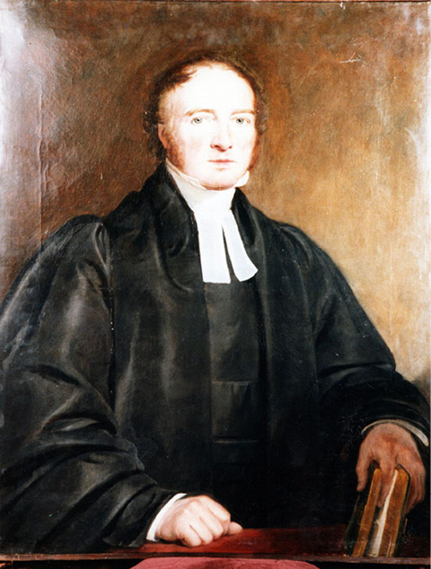
Timoleon Neff (1805–1876) (attributed). Portrait of Rev Edward Law (1791–1868). Leeds Russian Archive, University of Leeds, UK (LRA/MS 1117). [full resolution image]
Image 254
Mary Eliza (Law) Cattley, daughter of Rev. Edward Law
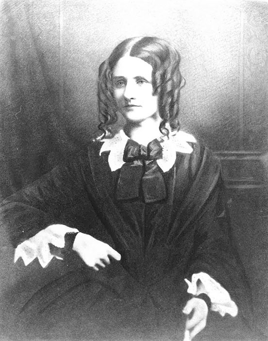
Mary (Law) Cattley. Photograph of a portrait. Leeds Russian Archive, University of Leeds, UK (LRA/MS 1406). [full resolution image]
Image 255
James Richard Cattley, who married Mary Eliza Law in October 1840
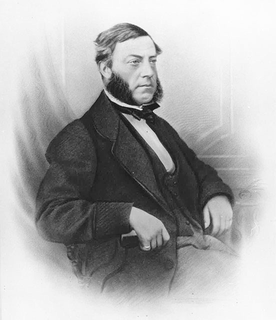
James Richard Cattley. Photograph of a portrait. Leeds Russian Archive, University of Leeds, UK (LRA/MS 1406). [full resolution image]
Image 256
Reverend Thomas Scales Ellerby, pastor of the British and American Congregational Church in St. Petersburg from 1840 to 1853
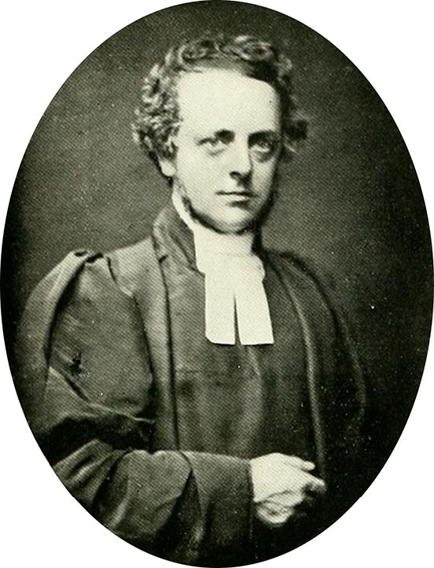
Rev. T.S. Ellerby (Romanes, Calls of Norfolk and Suffolk, following p. 82) [full resolution image]
Image 257
Sarah Bealey Schofield, niece of Rev. T.S. Ellerby’s wife, who, before her marriage to Charles Bell, was nursemaid to the Ellerby children
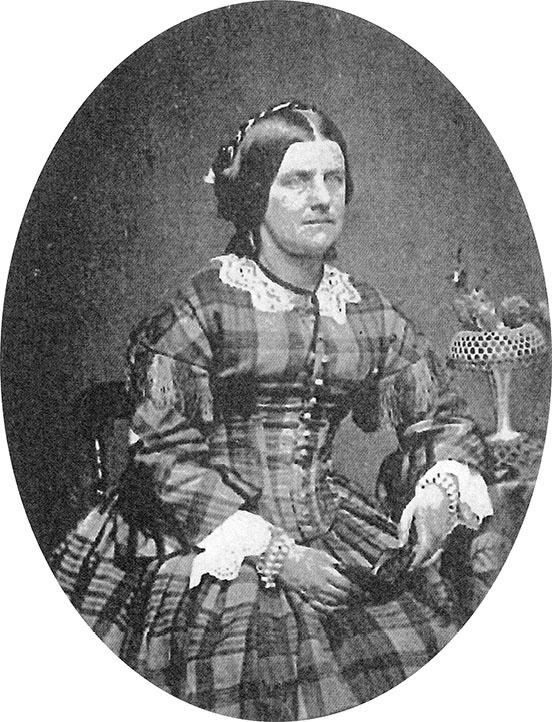
Sarah Bell (Romanes, Calls of Norfolk and Suffolk, following p. 86) [full resolution image]
Image 258
William Maingay, British merchant in St. Petersburg from the 1830s until May 1844, husband of Eliza (Lamb) Maingay
Emma Elizabeth Maingay, second daughter of William and Eliza (Lamb) Maingay, was the lifelong friend of Deborah Delano (Whistler) Haden, whom she met in St. Petersburg.
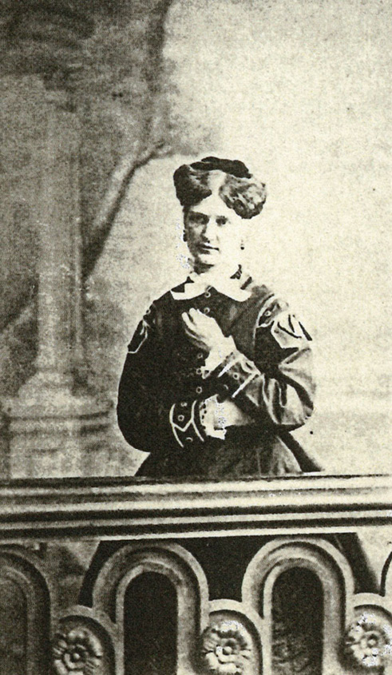
Emma Elizabeth Maingay. September 1859. Photograph. Maingay Family Archive. [full resolution image]
Image 264
Emily Maingay (“Lille” or “Lily”), youngest daughter of William and Eliza (Lamb) Maingay
William Clarke Gellibrand, an English merchant, became a close friend of the Whistlers in St. Petersburg.
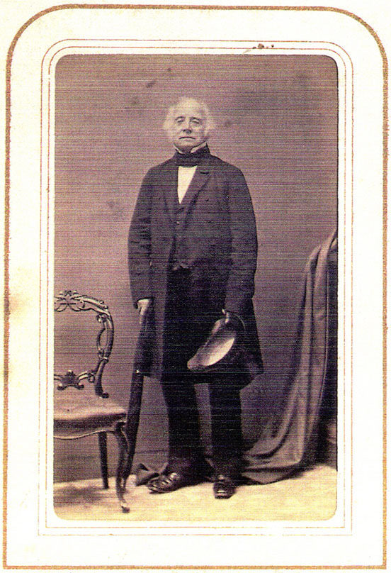
William Clarke Gellibrand. Photograph taken in Norwich, England, provided by Jane D’Arcy, a descendent of William Clarke Gellibrand’s brother, Joseph Tice Gellibrand. [full resolution image]
Image 266
Mary Tyler (Ropes) Gellibrand, the American wife of William Clarke Gellibrand, became a close friend of Anna Whistler’s.
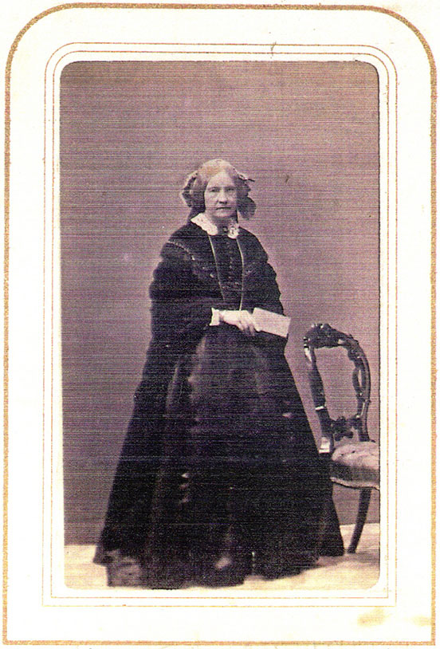
Mary Tyler Gellibrand. Photograph taken in Norwich, England, provided by Jane D’Arcy, a descendent of William Clarke Gellibrand’s brother, Joseph Tice Gellibrand. [full resolution image]
Image 267
Mary Tyler (Ropes) Gellibrand and her biological sister, Elizabeth Hannah Ropes, whom she and her husband, William Clarke Gellibrand, adopted, frequently visited her brother, William Hooper Ropes, who lived across the hall from the Whistlers.
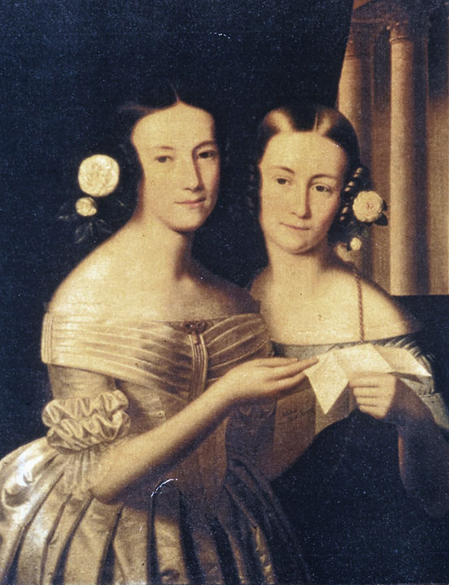
Jean Daniel Huber (1754–1845). Mary Tyler (Ropes) Gellibrand and her sister Elizabeth Hannah Ropes. Photograph of an 1840 portrait painted in the Tyrol. Leeds Russian Archive, University of Leeds, UK (LRA/MS 1406). [full resolution image]
Image 268
The Whistler family frequently visited with Archibald Mirrielees, Scottish merchant, a friend of the Ropeses and Gellibrands.
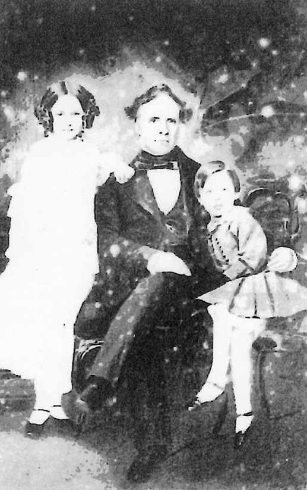
Archibald Mirrielees with his children Maggie and Fred. Photograph from daguerrotype of 1857. (Pitcher, Muir and Mirrielees, p. 42). [full resolution image]
Image 269
The Whistler family frequently visited with Jane (Muir) Mirrielees in St. Petersburg, after she became the third wife of Archibald Mirrielees in 1844.
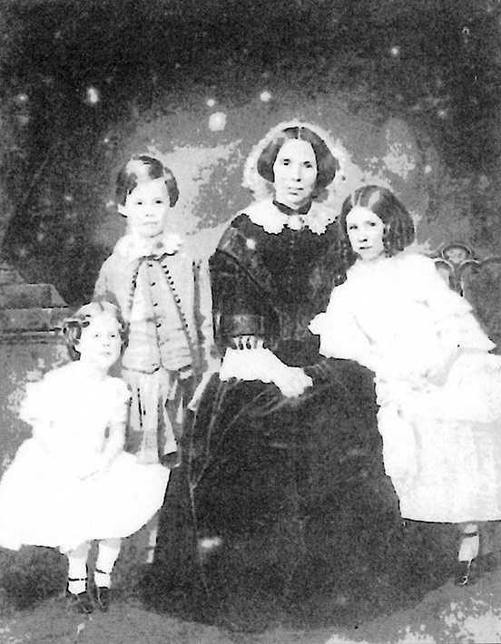
Jane (Muir) Mirrielees, third wife of Archibald Mirrielees, with three of their children: Maida, Archy, and Augusta. Photograph from daguerrotype of 1857. (Pitcher, Muir and Mirrielees, p. 42) [full resolution image]
Image 270
Benjamin Ropes Prince, brother of George Henry Prince and first cousin of William Hooper Ropes
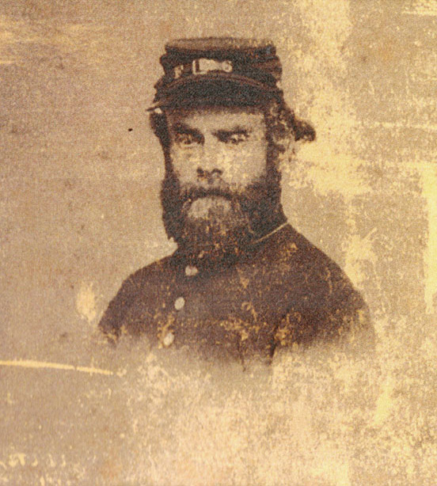
Benjamin Ropes Prince. 1863. Photograph taken at Whitney’s Gallery, St. Paul, MN. Courtesy of S. Hardy Prince, of Beverley, MA. [full resolution image]
Image 271
Charles Wood was in the cotton-spinning business in St. Petersburg.
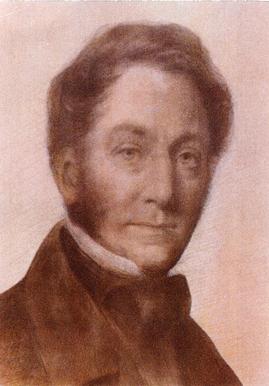
Charles Wood. Photograph. Courtesy of Rev. Eric Wood of Bruton, Somerset, England. [full resolution image]
Image 272
Lydia (Procter) Wood, wife of Charles Wood and a close friend of Anna Whistler’s in St. Petersburg
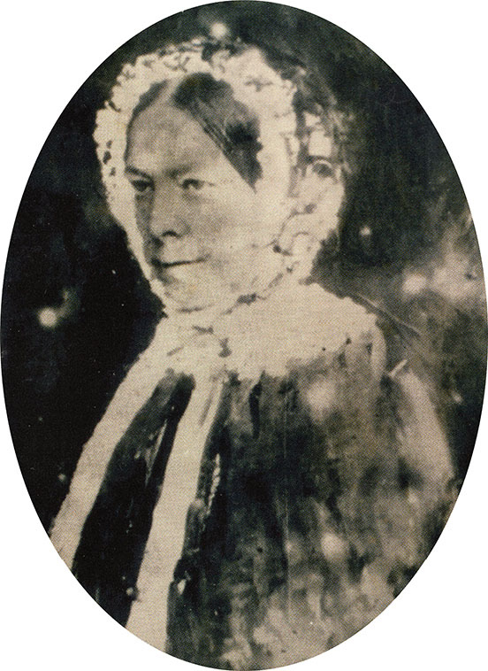
Lydia (Procter) Wood. Photograph. Courtesy of Rev. Eric Wood of Bruton, Somerset, England. [full resolution image]
Image 273
Harriet (Henley) Whishaw, a close friend of Deborah Whistler’s, whose wedding the latter could not attend in 1846 because she was in England
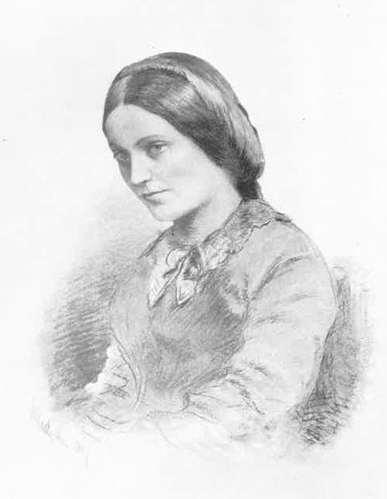
Harriet Whishaw, née Henley (Whishaw, History, between pp. 164–165) [full resolution image]
Image 274
Charles Baird, owner of the Baird Iron Works, that made metal furnishings for many of the buildings of St. Petersburg, died in late 1843. “Old Mrs. Baird” was his widow.
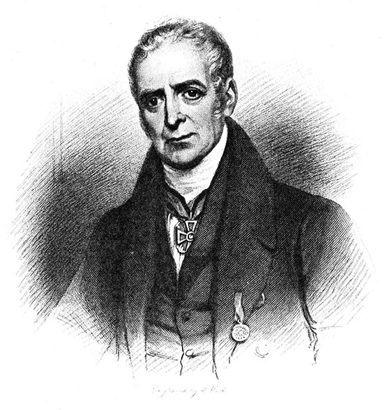
W. Hall. Charles Baird. 1867. Engraving. (T. Tower, Memoir of the Late Charles Baird, Esq., of St. Petersburgh, and of His Son, the Late Francis Baird, Esq., of St. Petersburgh, and 4, Queen’s Gate, London [London: Harrison & Sons, 1867], frontispiece) [full resolution image]
Image 275
Francis Baird, son of Charles Baird, who succeeded his father as head of the Baird Iron Works
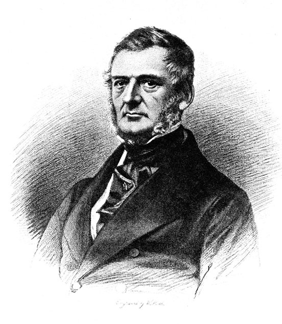
W. Hall. Portrait of Francis Baird, son of Charles Baird. 1867. Engraving. (Tower, Memoir of Charles Baird, frontispiece) [full resolution image]
Images 276, 277
The Elizaveta, the first Russian steamship, produced at the Baird Iron Works in 1815
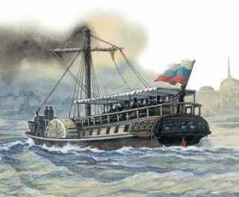
Elizaveta. c. 1820. Colored lithograph. (The First Steamboat on the Neva, 20 February 2023.)
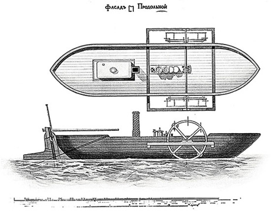
[Elizaveta] Longitudinal Façade. (Tower, Memoir of Charles Baird, unnumbered plate) [full resolution image]